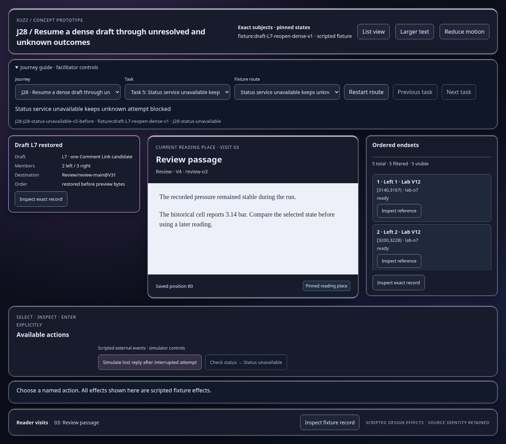
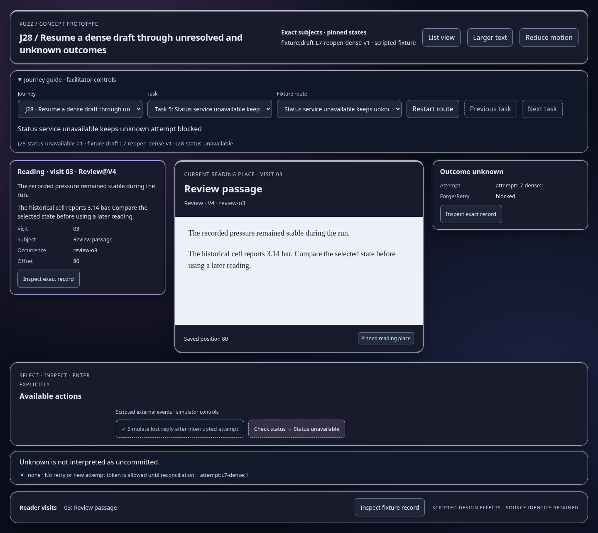
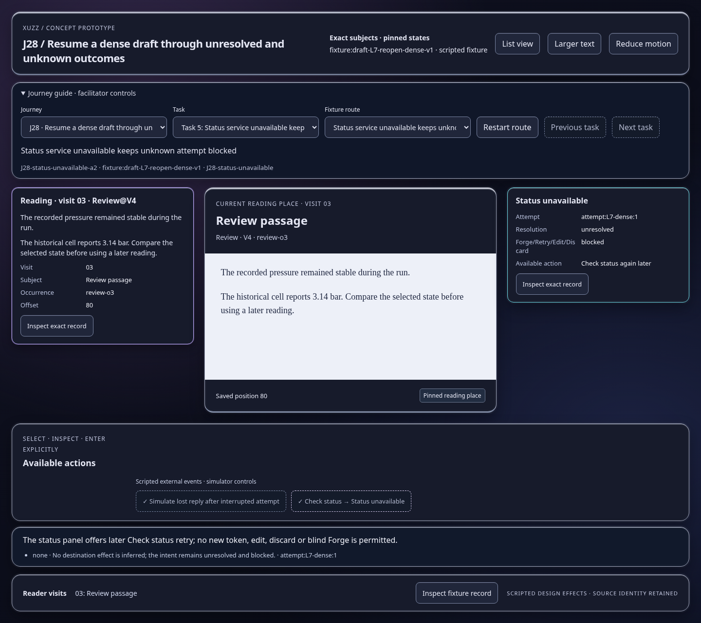

Scripted concept states; inspect the effect and identity trace. Images show actual prototype rendering.

Unknown is not interpreted as uncommitted.
Open this represented state
The status panel offers later Check status retry; no new token, edit, discard or blind Forge is permitted.
Open this represented state